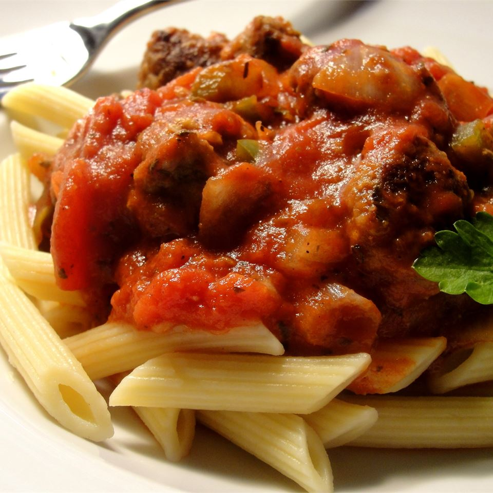

A flavorful homemade recipe for those who are
tired of sweet pasta sauces. Serve over your
favorite pasta with a tossed green salad and
crusty garlic bread.
- 1 pound Italian sausage links
- ½ pound lean ground beef
- 1 tablespoon olive oil
- 1 onion, chopped
- 1 clove garlic, chopped
- 1 (16 ounce) can canned tomatoes
- 1 (15 ounce) can canned tomato sauce
- 1 teaspoon salt
- ¼ teaspoon ground black pepper
- 1 teaspoon dried basil
- 1 teaspoon dried oregano
- 1 bay leaf
- Removed casing from sausage links and
cut into 1/2 inch slices. In a large
skillet, brown sausage over medium
heat for about 10 minutes; remove and
set aside.
- In a large skillet, heat ground beef,
olive oil, garlic and onion over medium
heat until meat is nicely browned; drain.
- Pour in tomatoes and tomato sauce; mix
in salt, ground black pepper, basil,
oregano, bay leaf and cooked sausage.
Simmer uncovered for 1 hour, stirring
occasionally.
- Bring a large pot of lightly salted
water to a boil. Add pasta and cook
for 8 to 10 minutes or until al
dente; drain.
- Mix cooked sauce with hot pasta and
remove bay leaf from sauce before
serving.
Nutrition Facts
Per Serving: 339 calories; protein 18.5g;
carbohydrates 11.4g; fat 24.6g;
cholesterol 58.1mg; sodium 1517.8mg.
Return to home